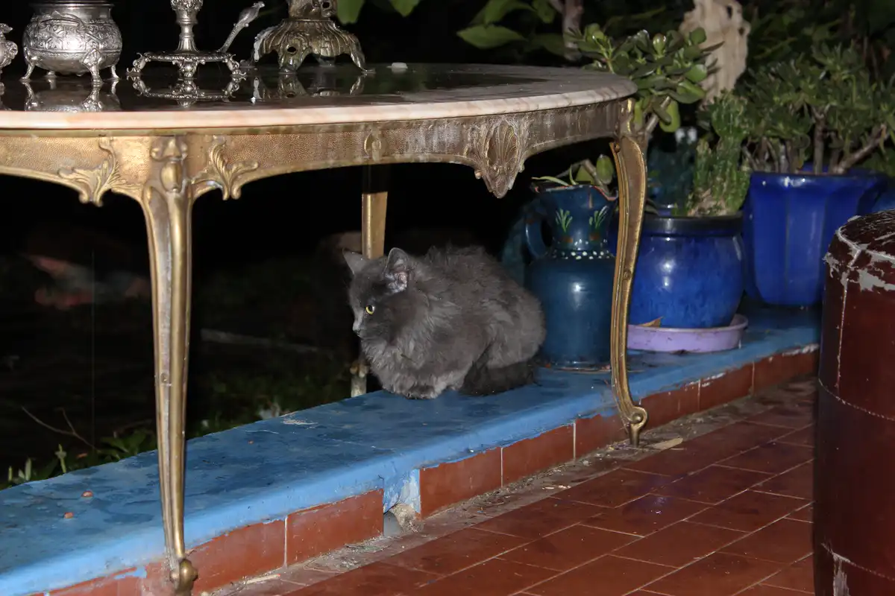
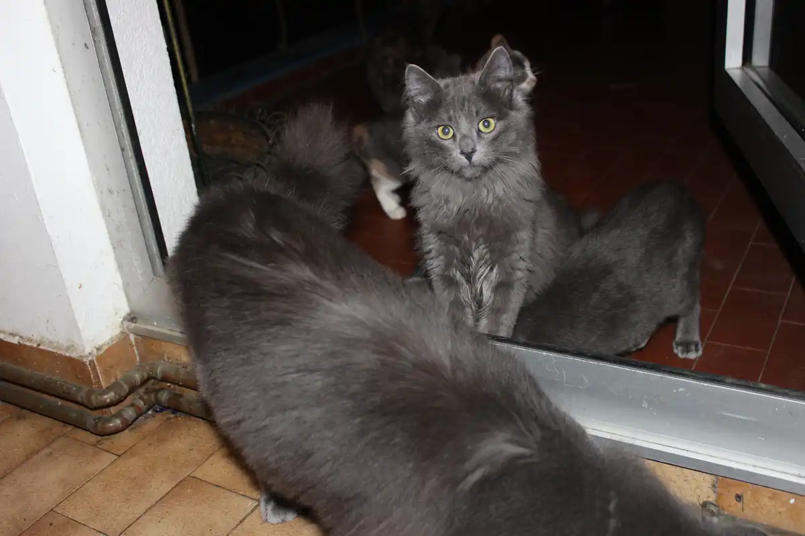
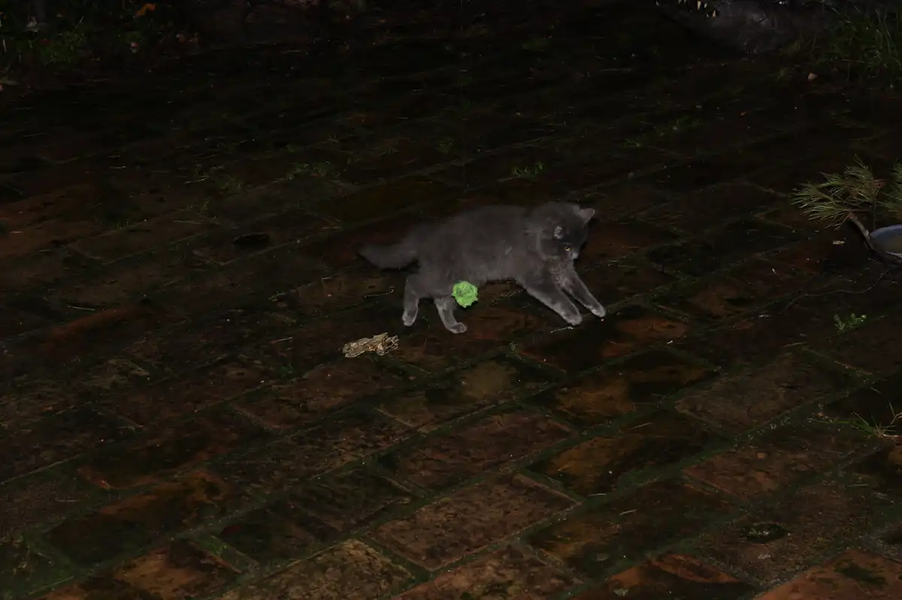
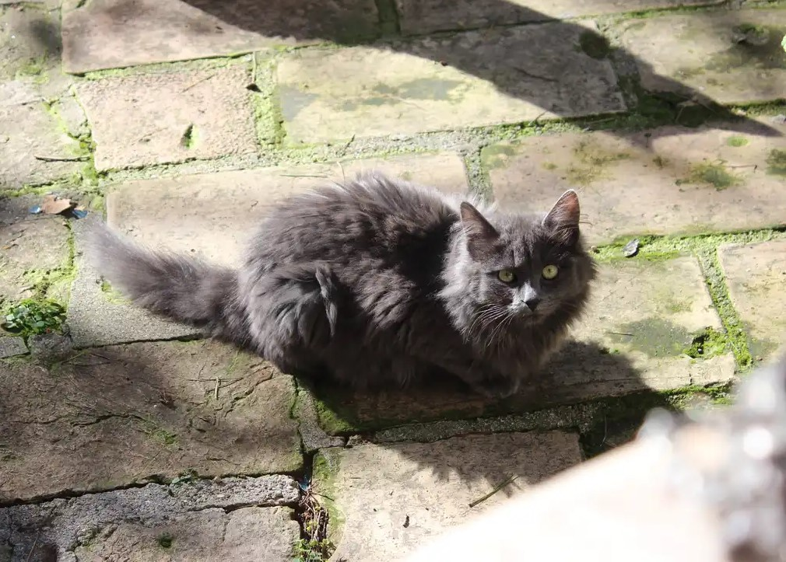
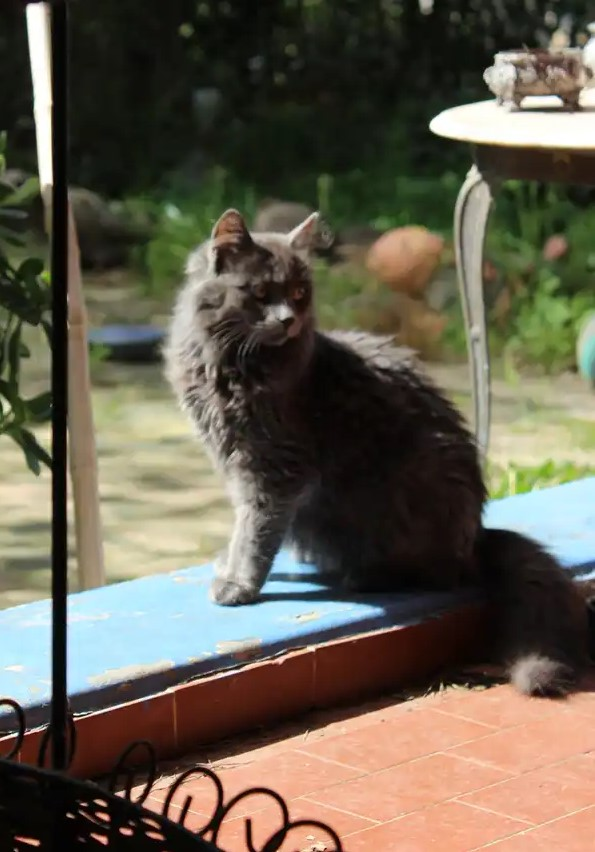
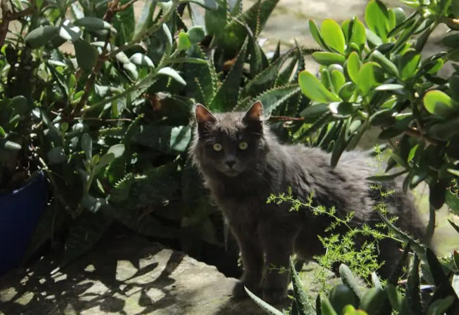
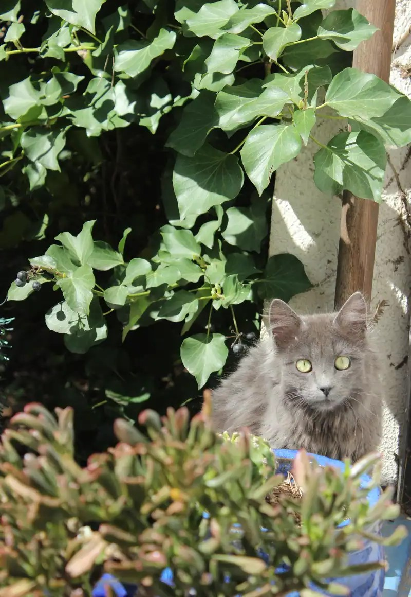

Petite boule

Petite boule fait du boudin
Petite boule se hisse sur ses petites pattes
Petite boule essaie d'attraper la balle mais saute à côté...
Petite boule au soleil
Petite boule prend la pose
Petite boule dans les plantes
Petite boule voulait se cacher derrière un pot mais je l'ai vu-e